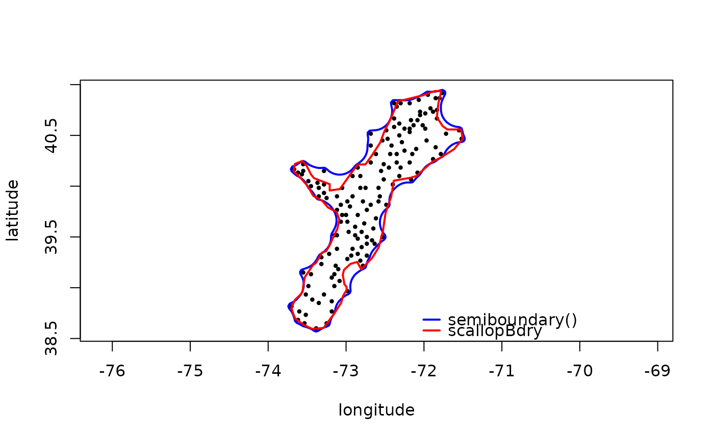
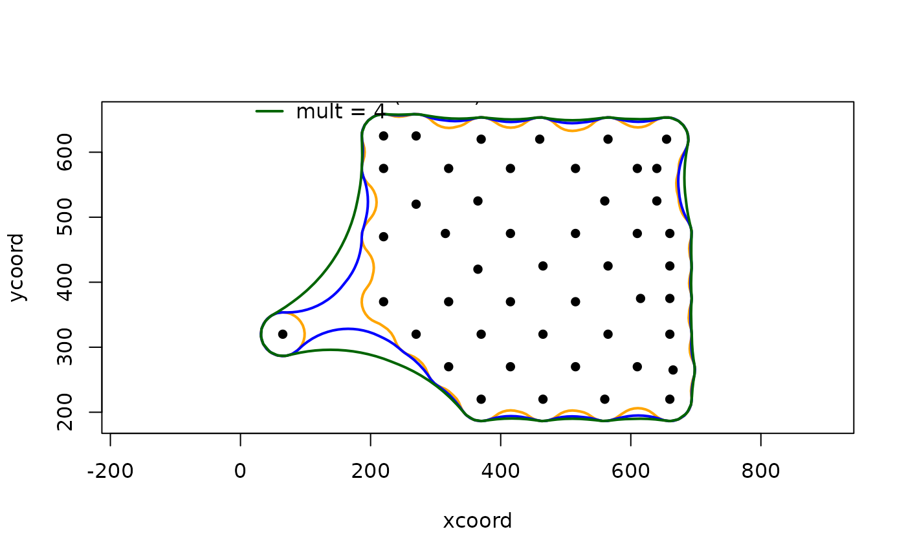
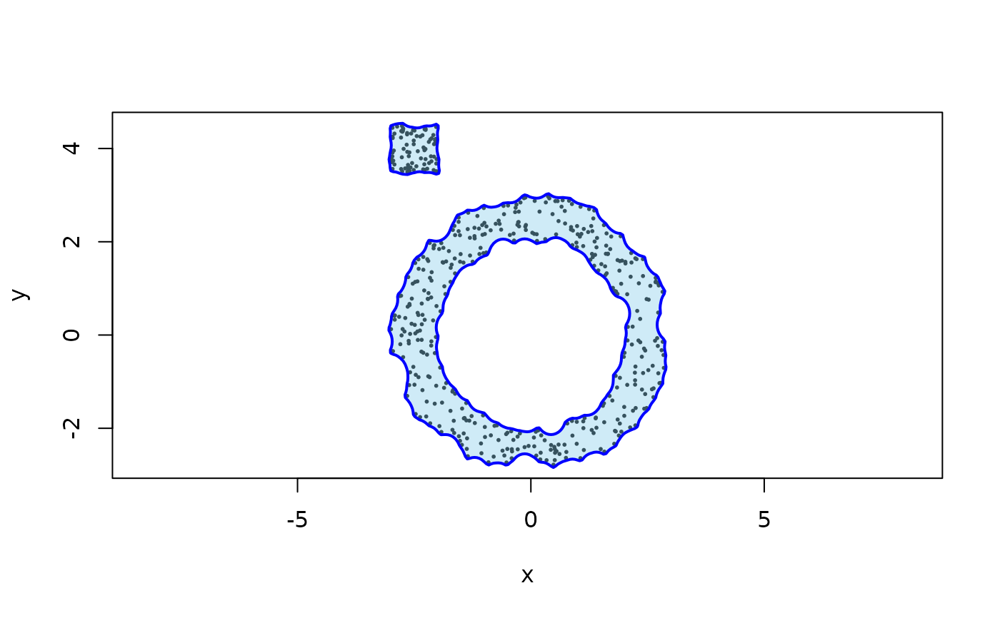
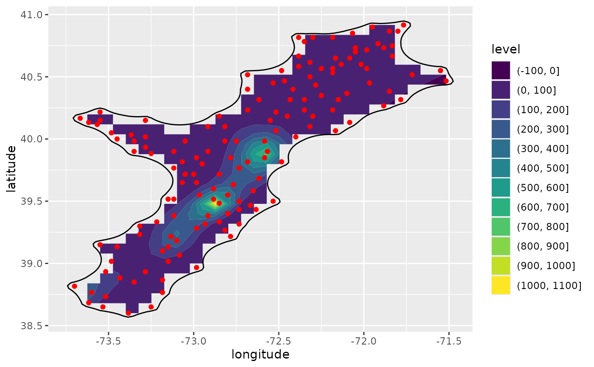
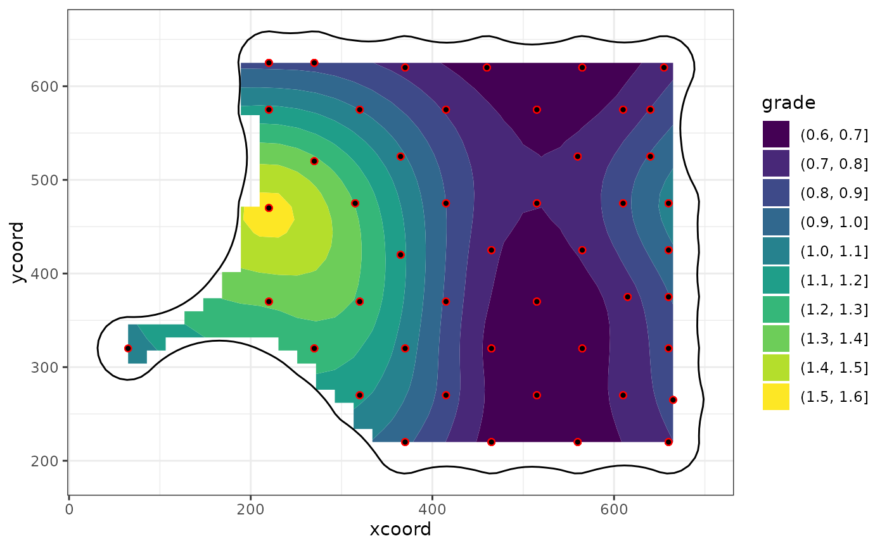
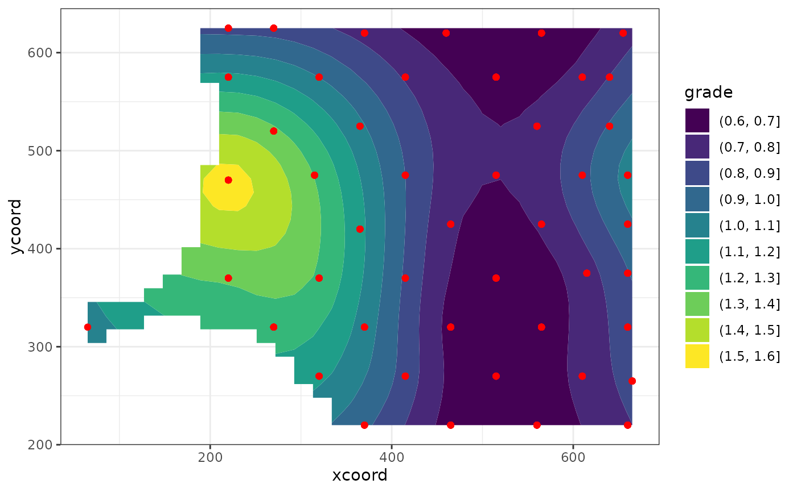

Draws a boundary around the points of two covariates (such as longitude and latitude, or the coordinates of
drill holes), following the shape of the data, for the boundary option of semipred:
predictions of a surface are then shown only where the data support them, not in the empty corners of the
rectangle the grid covers.
Usage
semiboundary(
x,
y = NULL,
mult = 2,
d = NULL,
buffer = 0.5,
scale = c("auto", "lonlat", "same", "sd"),
min_hole = 20,
n = 150
)Arguments
- x
A matrix or data frame with two columns (the two covariates, e.g. longitude and latitude), or a numeric vector with
y.- y
A numeric vector, when
xis one.- mult
The closing distance
das a multiple of the 95th percentile of the nearest-neighbour distances (default 2).- d
The closing distance itself (on the scale of
scale), instead ofmult.- buffer
The margin left around the outer points, as a multiple of the median nearest-neighbour distance (default 0.5).
- scale
How the two covariates are put on comparable scales:
"auto"(default),"lonlat","same"or"sd"(see Details).- min_hole
Holes smaller than the area of this many data points (the region's area divided by the number of points, times
min_hole; default 20) are filled: the empty patches that random sampling leaves, not areas without data.0keeps every hole.- n
The least number of grid cells along the longer side of the data the outline is traced on (default 150); finer where the data are dense (cells of at most
d / 4, up to a million cells).
Value
A data frame with the two columns of x (same names), the vertices of the boundary's rings in
order, rings separated by a row of NA (as polygon draws them); a point is inside
when it is inside an odd number of rings. Attributes d (the closing distance) and scale.
Details
The region is the morphological closing of the data with a distance d. First every place
within d of a data point is taken (a union of discs), which follows any concave shape; then that
region is shrunk back by d less a small buffer, so that the boundary keeps close to the outer
points instead of bulging by d beyond them. Gaps narrower than about 2 d inside the data are
filled; larger empty areas stay outside (holes), and clusters further apart than that become separate pieces.
The outline is traced on a grid of n by n points with contourLines
(base R: no other package is needed).
d follows the density of the data: by default mult = 2 times the 95th percentile of the distances
from each point to its nearest neighbour. A high percentile, not the median, because randomly placed points leave
empty patches several times the typical spacing: with twice the median, uniform random designs of 50 to 1000
points gave on average 4 pieces and 12 spurious holes; with the default, one piece and no holes (every point
inside), while a real empty area (points on a ring) stays a hole. On the scallop survey the default
boundary covers 85% of the same area as the boundary drawn with the original analysis (scallopBdry;
intersection over union), with every point inside.
Distances need the two covariates on comparable scales (scale): "lonlat", longitude and latitude
in degrees, longitude shrunk by the cosine of the mean latitude (a degree east is shorter than a degree north
away from the equator); "same", coordinates in the same unit (metres, a local grid), used as they are;
"sd", two different variables, each divided by its standard deviation. "auto" (default) takes
"lonlat" when the columns are named like longitude and latitude (in that order) with values in range,
else "sd".
Suggestions
Look at the boundary with the data before using it (
plot()of the points andpolygon()of the boundary, as in the examples). It is a choice about where predictions are believable, not an estimate.mult: the default suits most designs, regular grids and random sampling alike. Use 3 or 4 for sparse or uneven sampling, or to keep one region where the data come in clusters; use 1 to 1.5 to follow the corners of a regular grid tightly. Separate pieces for clusters far apart are honest: there are no data between them.scale: for map coordinates in metres (UTM, a local grid) givescale = "same", so that the shape is not stretched; for two different covariates (for example temperature and pressure) the default"sd"keeps predictions to the combinations that were observed, which avoids extrapolating a surface into corners without data.The boundary only chooses which grid points
semipred()shows; it does not change the fit. Near the edge the bands are wider, as they should be.A boundary of your own (a coastline, a farm or field outline) can be given to
semipred()directly: two columns, several rings separated by a row ofNA.Holes:
semipred()leaves them out (a point is inside when it is inside an odd number of rings). To shade a region with holes usepolypath(b, rule = "evenodd"); to draw the outline with ggplot2 number the rings,b$ring <- cumsum(is.na(b[[1]])), and usegeom_path(aes(group = ring)), as in the examples.Large data: about 0.1 s for 150 points, 4 s for 10,000 and 9 s for 50,000; the grid the outline is traced on gets finer as the data get denser (up to a million cells).
Examples
library(predictmeans)
## 1. The scallop survey (longitude and latitude): the boundary from the data (blue) and the
## boundary drawn with the original analysis (red)
data(scallop); data(scallopBdry)
b <- semiboundary(scallop[, c("longitude", "latitude")])
attr(b, "scale") # "lonlat", from the column names
#> [1] "lonlat"
plot(latitude ~ longitude, data = scallop, asp = 1/cos(40*pi/180), pch = 16, cex = 0.6,
xlim = range(b$longitude, na.rm = TRUE), ylim = range(b$latitude, na.rm = TRUE))
polygon(b, border = "blue", lwd = 2)
polygon(scallopBdry, border = "red", lwd = 2)
legend("bottomright", c("semiboundary()", "scallopBdry"), col = c("blue", "red"),
lwd = 2, bty = "n")

## 2. Copper drill holes (coordinates in the same unit): how 'mult' changes the region;
## with mult = 1 the hole far to the left is a separate piece
data(copper)
holes <- unique(copper[, c("xcoord", "ycoord")])
b1 <- semiboundary(holes, mult = 1, scale = "same")
b2 <- semiboundary(holes, scale = "same")
b4 <- semiboundary(holes, mult = 4, scale = "same")
plot(holes, asp = 1, pch = 16, xlim = range(b4$xcoord, na.rm = TRUE),
ylim = range(b4$ycoord, na.rm = TRUE))
polygon(b1, border = "orange", lwd = 2)
polygon(b2, border = "blue", lwd = 2)
polygon(b4, border = "darkgreen", lwd = 2)
legend("topleft", c("mult = 1", "mult = 2 (default)", "mult = 4"),
col = c("orange", "blue", "darkgreen"), lwd = 2, bty = "n")

## 3. Pieces and holes: random points on a ring (the empty middle is a hole) and a separate
## cluster; polypath() shades the region with the hole left open
set.seed(1)
th <- runif(400, 0, 2*pi); r <- runif(400, 2, 3)
pts <- data.frame(x = c(r*cos(th), runif(80, -3, -2)), y = c(r*sin(th), runif(80, 3.5, 4.5)))
br <- semiboundary(pts)
plot(pts, asp = 1, pch = 16, cex = 0.4)
polypath(br, col = adjustcolor("skyblue", 0.4), border = "blue", lwd = 2, rule = "evenodd")

sum(is.na(br$x)) + 1 # 3 rings: the ring's two edges and the cluster
#> [1] 3
# \donttest{
## Surfaces shown only inside the boundary, with its outline and the data
library(ggplot2)
outline <- function(b) { b$ring <- cumsum(is.na(b[[1]])); b }
data(scallopKnots)
fs <- semireg(asinh(tot.catch) ~ s(longitude, latitude, bs = "ztps",
xt = list(knots = as.matrix(scallopKnots))), data = scallop)
semipred(fs, covariate = c("longitude", "latitude"), boundary = b, trans = sinh)$plt +
geom_path(data = outline(b), aes(longitude, latitude, group = ring), inherit.aes = FALSE,
na.rm = TRUE)

data(copperKnots)
fc <- semireg(grade ~ s(xcoord, ycoord, bs = "ztps", xt = list(knots = as.matrix(copperKnots))) +
s(zcoord, bs = "os"), data = copper)
semipred(fc, covariate = c("xcoord", "ycoord"), boundary = b2)$plt +
geom_path(data = outline(b2), aes(xcoord, ycoord, group = ring),
inherit.aes = FALSE, na.rm = TRUE) +
geom_point(data = holes, aes(xcoord, ycoord), inherit.aes = FALSE, size = 0.8)

# boundary = TRUE draws the boundary from the model's data (scale "auto": here "sd")
semipred(fc, covariate = c("xcoord", "ycoord"), boundary = TRUE)$plt

# }